cinnamott
Carol, tatuadora em Santana, na Zona Norte de São Paulo. Cybertribal, cybersigilismo e free hand: o desenho nasce na caneta, direto no seu corpo, e só depois vai pra agulha.
- Santana, ZN de SP
- Free hand
- Preto e vermelho
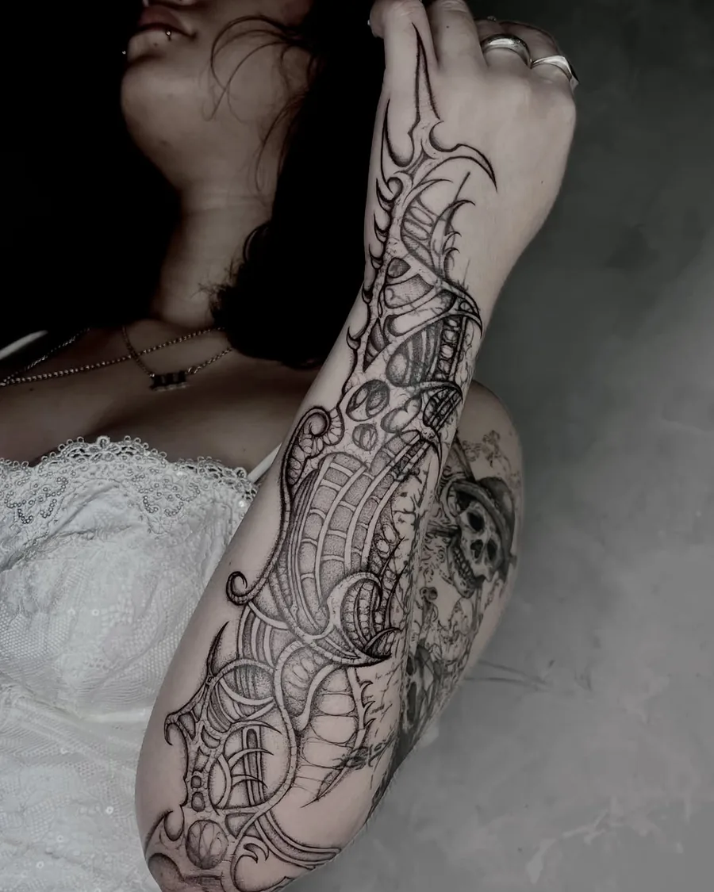
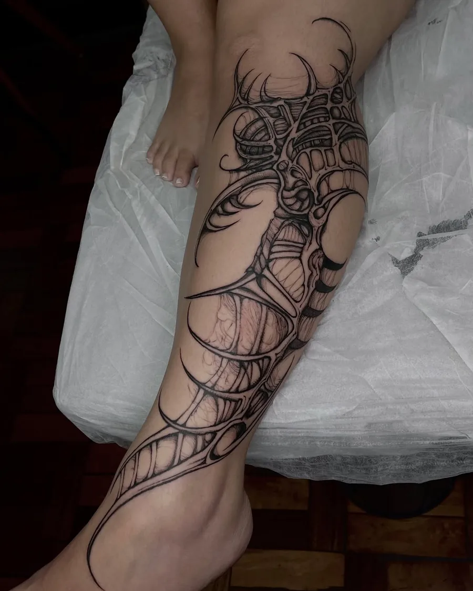
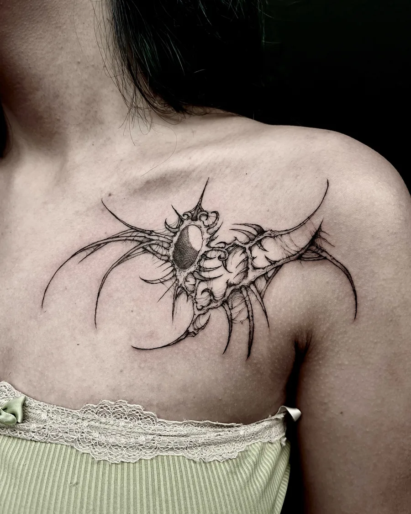
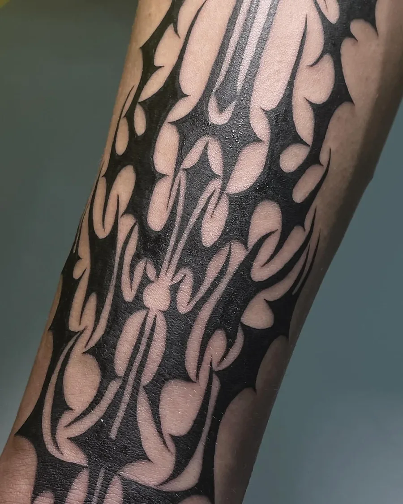
Estilos
Do preto chapado ao traço que some em ponta. Dá pra misturar, e o vermelho entra quando o desenho pede.
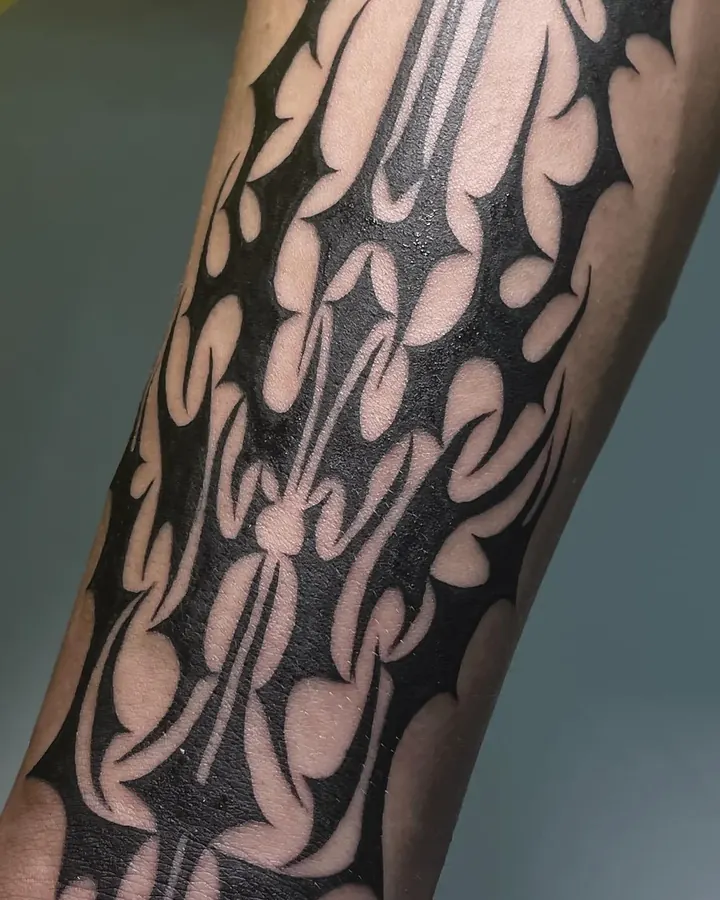
Cybertribal
Formas cheias em preto, com pontas afiadas que seguem o músculo.
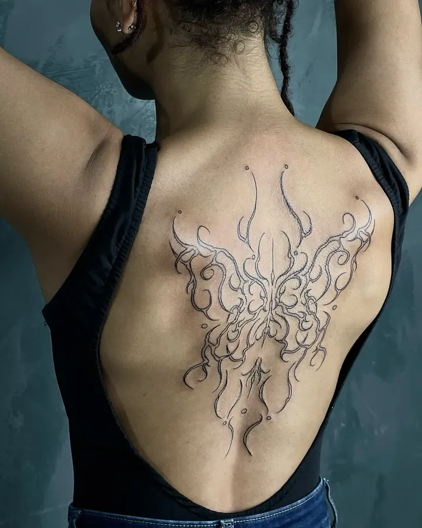
Cybersigilismo
Linha fina e longa, que se ramifica pelo ombro, pela coluna e pela mão.
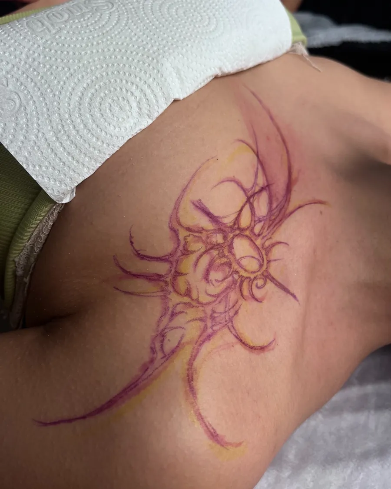
Free hand
Sem decalque. O desenho é feito na sua pele e ajustado ali mesmo.
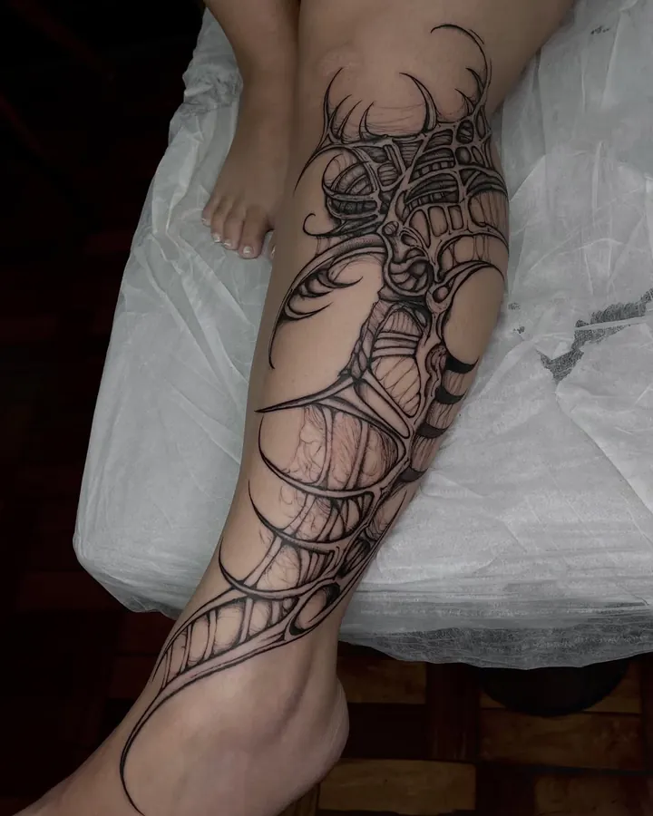
Peças grandes
Braço, perna, costas. Biomecânico e ornamental em várias sessões.
Free hand
Boa parte do que a Carol tatua não passa pelo papel. Ela desenha com caneta direto no corpo, seguindo o jeito que o braço, a perna ou as costas se mexem.
- CanetaO desenho é feito na pele, em camadas de cor, e muda quantas vezes precisar.
- AprovaçãoVocê vê no espelho, de todos os lados, antes da primeira linha.
- AgulhaA tattoo segue o traço aprovado e fecha o encaixe com o corpo.
Também serve pra cobrir cicatriz: o traço contorna a marca em vez de brigar com ela.
Portfólio
Trabalhos de 2022 a 2026. Toque numa foto pra ver todas as fotos daquela tattoo.
Disponíveis
Desenhos prontos pra tatuar, em preto, preto e vermelho, ou com outra cor no lugar do vermelho. Toque num desenho pra ver maior e reservar.
Os outros desenhos têm valor conforme tamanho e lugar do corpo. Chama no WhatsApp com o número do desenho.
Cicatrizadas
Fotos depois da cicatrização, mandadas pelos clientes. É assim que fica no dia a dia.
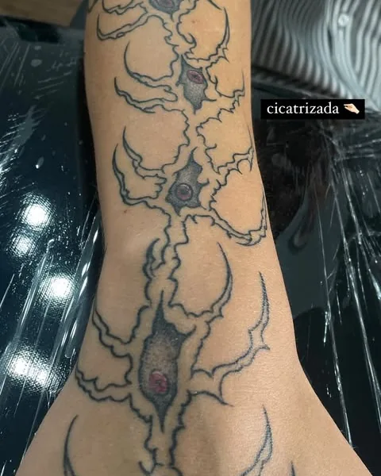
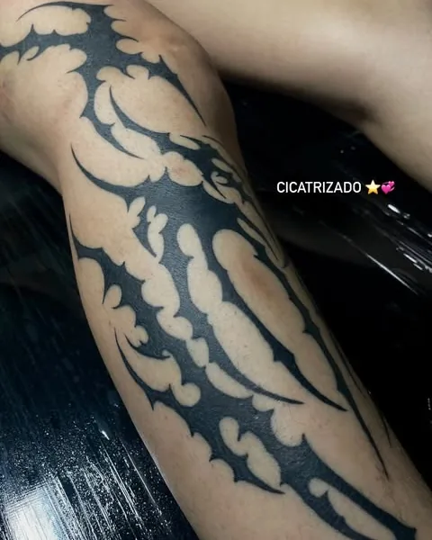
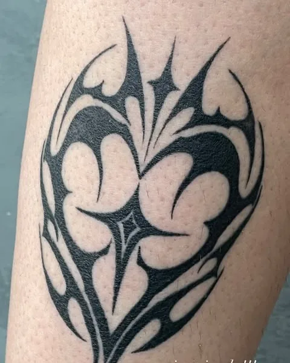
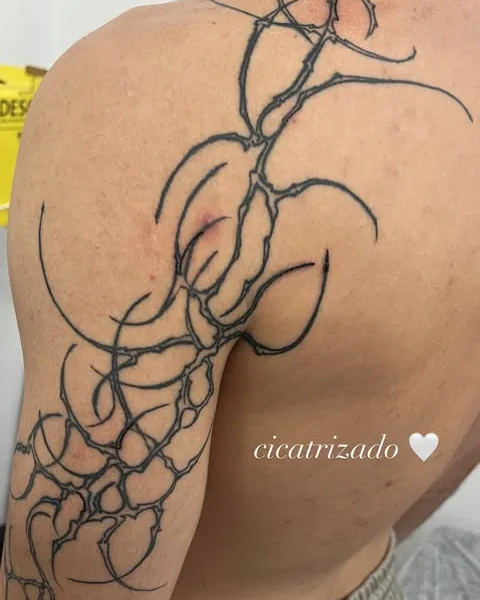
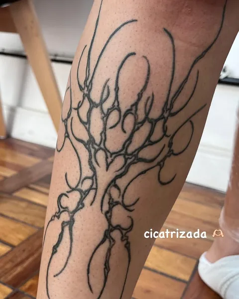
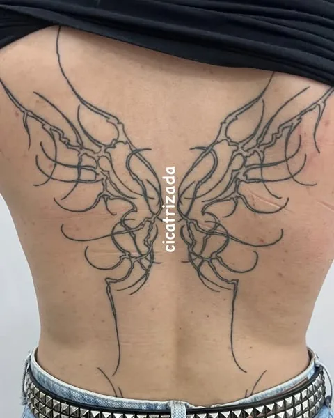
Como agendar
Tudo pelo WhatsApp. A resposta sai em 1 a 2 dias úteis.
- Ideia
Manda a mensagem
Com nome, idade, pronomes, local do corpo, tamanho em cm e referências, ou o número de um desenho disponível.
- Orçamento
Recebe o valor
A Carol responde com o orçamento e o que dá pra fazer no desenho.
- Reserva
Escolhe a data
A agenda abre por mês, com sessões nos fins de semana.
- Sessão
Aprova o desenho
Na caneta, no free hand, ou no decalque. A agulha só entra depois do seu ok.
O que é free hand?
É quando o desenho é feito com caneta direto na pele, sem decalque. Assim ele acompanha o formato do corpo e pode ser ajustado na hora, até você aprovar.
Dá pra trocar o vermelho por outra cor?
Dá. Os desenhos disponíveis saem em preto, em preto e vermelho, ou com outra cor no lugar do vermelho.
Faz cobertura de cicatriz?
Faz, e quase sempre no free hand, pra o traço contornar a marca. Manda uma foto do local na mensagem.
É normal sair um líquido avermelhado depois?
É. Com a tattoo fresca, a pele libera linfa, que se mistura com a pomada, um pouco de sangue e o excesso de tinta. Faz parte da cicatrização.
Preciso preparar a pele?
Hidratar a pele nos dias antes da sessão ajuda muito, a tinta entra melhor e a cicatrização é mais tranquila.
Quem tatua
Carol, a cinnamott. Ela/dela.
São quatro anos de tattoo. O começo foi com anime: Sukuna, Zoro, Gengar, Obito, muita fanart em preto. Daí veio o cybertribal, que virou assinatura, e depois o cybersigilismo e o free hand.
Os desenhos disponíveis ela apresenta em estátuas e manequins, no cinza do gesso, como se a tattoo já estivesse no lugar. Fora da agulha é Corinthians, show de rock e pug no colo.
cyber 4ever
Onde atendo
No Hendrix, barbearia e estúdio de tattoo em Santana.
R. Cel. Evaristo de Campos, 131
Santana, Zona Norte de São Paulo. Horário combinado na reserva.
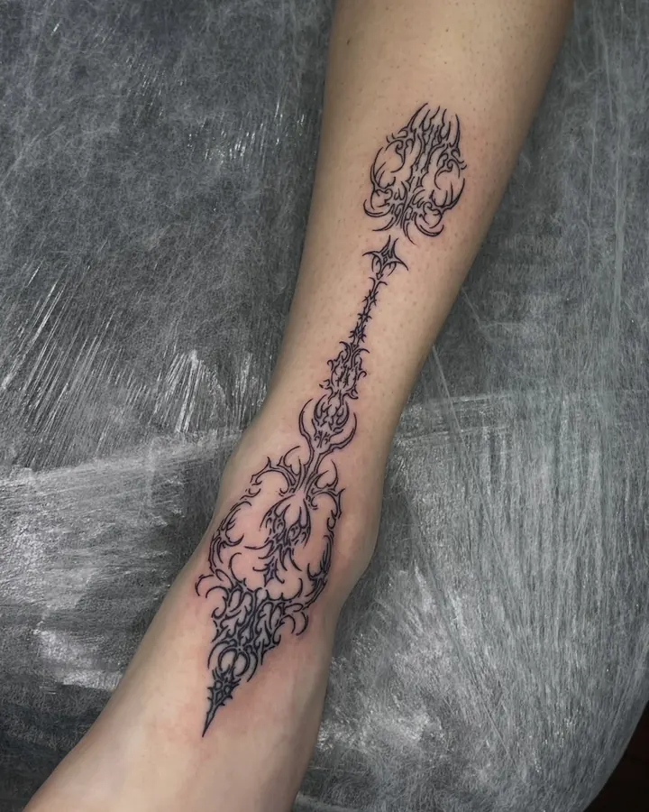
Qual parte do corpo vai ser?
Manda a ideia, o lugar e o tamanho. A Carol responde com valor e data.
Orçamento no WhatsApp Novidades e agenda nos stories do @cinnamott